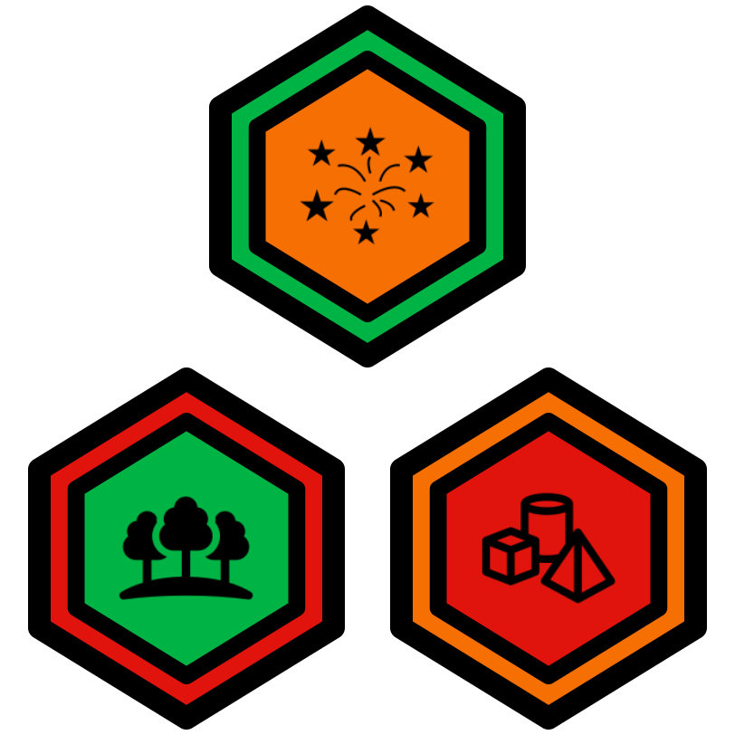

Welcome to the kata collection for 3D Exploration. This is for students and coaches participating in their local scholastic game jams for Winter 2020.

1 Intro Katas
1.1 Code Value 1 Kata (difficulty = 1)
1.2 Code Value 2 Kata (difficulty = 1)
1.3 Code Value 3 Kata (difficulty = 1)
1.4 Game Jam Kata (difficulty = 1)
1.5 Hello World 1 Kata (difficulty = 1)
2 Environment Katas
2.1 Environment 1 Kata (difficulty = 1)
2.2 Environment 2 Kata (difficulty = 1)
2.3 Environment 3 Kata (difficulty = 1)
2.4 Environment 4 Kata (difficulty = 1)
3 Ground Objects Katas
3.1 Ground Objects 1 Kata (difficulty = 1)
3.2 Ground Objects 2 Kata (difficulty = 2)
3.3 Ground Objects 3 Kata (difficulty = 4)
3.4 Ground Objects 4 Kata (difficulty = 1)
3.5 Ground Objects 5 Kata (difficulty = 3)
4 Sky Objects Katas
4.1 Sky Objects 1 Kata (difficulty = 2)
4.2 Sky Objects 2 Kata (difficulty = 2)
4.3 Sky Objects 3 Kata (difficulty = 1)
4.4 Sky Objects 4 Kata (difficulty = 1)
4.5 Sky Objects 5 Kata (difficulty = 1)
5 Particles Katas
5.1 Particles 1 Kata (difficulty = 1)
5.2 Particles 2 Kata (difficulty = 1)
5.3 Particles 3 Kata (difficulty = 1)
5.4 Particles 4 Kata (difficulty = 1)
5.5 Particles 5 Kata (difficulty = 1)
6 Animations Katas
7 VR Assets
8 Game Jam
8.1 Objective
8.2 Partnering Up
8.3 Prompt
8.4 Hints and Help!
8.5 Staff Role During the Jam
8.6 Scoring
8.7 Leading into the Jam